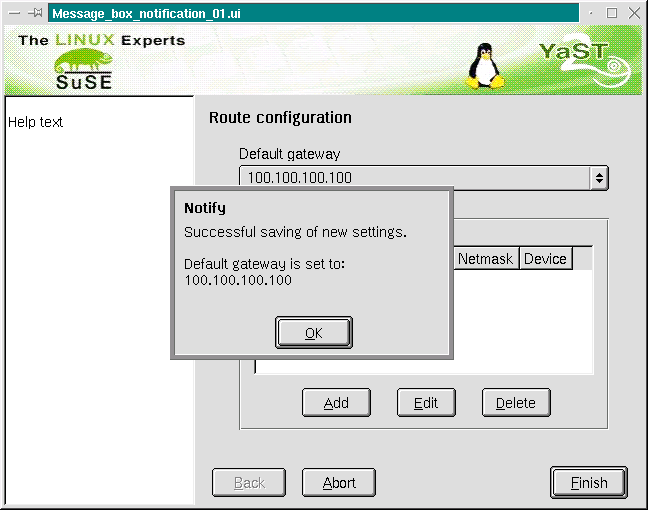
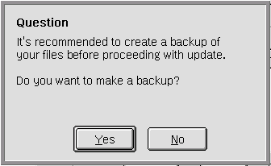
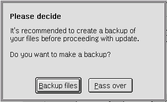

[previous page] --- [back to index] --- [next page]
[previous
page] --- [back to index] --- [next
page]
Types of messages
Keep it
simple
Everything should be operable by keyboard
General advice
for naming buttons
Simple
notification pop up
Yes-No pop
up
Confirmation request after
(simple) selection
Confirmation
request after (simple) selection with help button
Confirmation
request after two simple selections
Progress
dialogue
Help text in pop-up
boxes
Complex pop-up
dialogues
Messages with no buttons
Messages bring information to the user. A good information policy is substantial for self-descriptiveness and controllability of the program. Keep the untrained user in mind. He needs clear and well structured information. All requests for information should be phrased in plain language and in a nonthreatening manner.
There are two main differences
A modeless dialog box is like a new window nearby the dialog. The user can use the functions provided by the dialog box or go on working with the main window. A fine example is a Search & replace dialog box. User can close the box with a command element in the window title bar.
A modal dialog box will force the user to interactivate with the message in the box. He is forced to carry out a specific operation. The problem here is – the user is away from the main path of working on his task. It is strongly recommended to refresh the content of the dialog in the window back of the modal box if the user changes an option that is displayed in the dialog box and the dialog page where he comes from.
Other authors (e.g. Apple Style Guide) make differences between modeless dialog box, 'movable' modal dialog box, modal dialog box and alert box. But this is not necessary in my view. In YaST2 you will only find modal dialog boxes.
Note: Complex dialogs can force you to add a second level modal dialog box on top of the first. Make sure that the first level dialog box is always visible in the background of the second level modal dialog box.
Some comments to the naming of the dialog box main buttons:
OK
Cancel
Help
Not used yet but in the focus of interest: Apply
In our mind a button named Apply will cause confusion. Like in the Apple Style Guide written, the Apply button will need a Cancel button for an undo of changes. But normally the Cancel button will close a dialog box. So you will need an additional button with Reset. But what kind of reset, to default values or a reset as an undo. You see, you will need a second additional button with Undo. And the OK button will close and apply the settings. ... You see, the Apply button conflicts with the goal Keep it simple.
Have a look at the KDE buttons below the dialog pages of the
KDE Control Center. The untrained user has problems with
***
Messages without interaction
Messages with interaction
Notification
Request
Warning
Complex dialogue
A consistent layout will reduce recognition effort. So the user can set his focus to the content of the message an not to the understanding of the presented information.
Note! The textual information has to be structured well.
If you want to design a complex setup within a message box, think about a completely new dialogue!
Schema:
|
Heading area: Message type and/or caption |
|
Dialogue area: |
|
Control area: Buttons |
Fictive examples:
|
Information not structured An error occurred during
installation of /dev/eth0, /dev/eth1. Cannot write settings, no
IP-address assigned, cannot write settings, no IP-address
assigned. |
Information well structured 2 errors occurred during installation of 2 network devices: 1. network card 1 as
/dev/eth0 2. network card 2 as
/dev/eth1 |
You need no specific control elements (close, enlarge window) to a simple message box.
Dialogues should never have menu bars or tool bars inside them (see KDE-styleguide).
Every button should have a shortcut key for activation (e.g. <Alt-Y> for 'Yes').
Add an additional request if necessary!
If the user has made a lot of selections and hits the [-Cancel] button accidentally he will become very angry. Add a second confirmation dialoude.
The ergonomics often demand 'voice active' prompts.
E.g.
buttons labeled like [-Delete-] [-Cancel-] are much better than
[-OK-] [-Cancel-] if the user has to decide if he wants delete a
file. The demand is right in theory, but if you want to put this into
practice you will perhaps come into trouble.
YaST2 is a multilingual tool and different languages will cause more programming efforts. So 'OK' is a good alternative for nearly every situation.
Often it is difficult to find a precise term. So use standard expressions!
The length of the buttons will vary in different languages an will cause spacing problems. Be aware of this.
Used to give feedback about 'unproblematic' system messages. The user can't do anything but to confirm that he has read the information.
If a problem is reported you normally can't use this type of message because you must offer additional information about the solving of the problem by a help button.

(made
with qt-designer)

(made
with qt-designer) - with fine information about the done settings :-)
Use a short caption like 'Notify' or 'Please note'. Sometimes it would be nice to give direct information by 'Successful saving' or something like this (but please not 'Unsuccessful saving' but 'Warning' ....)
Fontstyle of caption is bold.
Single [- OK -] buttons in pop up dialogues (information messages) are centered at the bottom of the box. [-OK-] is activated by default, <Space>, <ESC> and <Enter> will close the box.

(made
with qt-designer)
The [-Yes-] button is placed on the left side. The [-NO-]/[-Cancel-] button is placed on the right.
We assume that YaST2 works fine and the default selection [-Yes-] is a good preselection for the user. This should be the first button in users focus.
Both buttons together are centered. Don't make the spacing between the buttons too small.
The following example shows a Yes-No pop up, but mit 'speaking buttons'.

(made
with qt-designer)
Sometimes a caption will not be necessary. {a point for discussion!}
The default selection is [-OK-].
Don't put a frame round the radio buttons or checkboxes in a simple box.
Insert enough space between left margin and radio buttons or checkboxes and add a little distance between text and buttons. The two blue lines in the example below show the two possibilites to align the radio buttons.
In simple boxes it is not necessary to add a „second level pop-up box“ containing the warning that all selections are lost by clicking onto [-Cancel-]. Then the pop-up box disapears an the user can see the starting screen. For continuing the user can probably do nothing else but to click onto a button that activates the pop-up box again or activate another button if possible.
If you need an additional [-Help-] button, place it on the right side. The spacing between [-Cancel-] and [-Help-] button should be greater than between [-OK-] and [-Cancel-]. All buttons together are centered.
The usage of frames is recommended if you ask for more than one type of selection.
The user needs a visual feedback such as a progress bar plus a percent indicator.
Theoretically there are two possible buttons with the function [-Cancel-] (no changes are made - e.g. all copied files will be deleted) and/or [-Stop-] (a partial work was done - e.g. copied files will be left on HD). You should add an additional yes-no request if the user activates [-Cancel-].
Keep your helptext short and show it a window without horizontal scrollbars if possible. If your text is long make height bigger than width. User can leave the box with <Return>, <Space> or <ESC>.
The KDE-styleguide discusses the problem of the limited screen size. All settings in a fine tune dialogue box should be in a field of 640 x 480 pixels (laptops).
All dialog should be accessible from keyboard.
There are some additional buttons like [-Help-], [-Defaults-] or [-Apply-]
In complex message boxes we normally place a text information (help for the user) at the left side. Possible splits are 50/50% or 30/70%.
[previous page] --- [back to index] --- [next page]
sigi@suse.de
/ file: